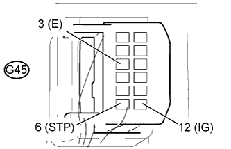
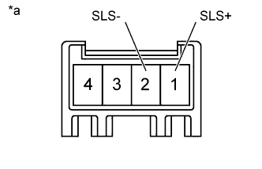
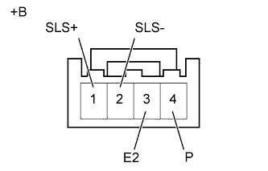

РЫЧАГ ПЕРЕКЛЮЧЕНИЯ ПЕРЕДАЧ > ПРОВЕРКА БЕЗ СНЯТИЯ С АВТОМОБИЛЯ |
| 1. ПРОВЕРЬТЕ БЛОКИРОВКУ СЕЛЕКТОРА |
Установите рычаг переключения передач в положение P.
Выключите зажигание.
Убедитесь в том, что рычаг переключения передач невозможно вывести из положения P.
Включите зажигание (IG), нажмите педаль тормоза и убедитесь, что рычаг переключения передач может быть переведен в другие положения.
Если результат проверки не соответствует требованиям, проверьте рычаг переключения передач в сборе и устройство управления блокировкой селектора.
| 2. ПРОВЕРЬТЕ РАБОТУ КНОПКИ РАЗБЛОКИРОВКИ СЕЛЕКТОРА |
Нажмите кнопку разблокировки рычага переключения передач и убедитесь, что рычаг переключения можно переместить в любое положение.
Если результат проверки не удовлетворяет требованиям, проверьте рычаг переключения передач в сборе.
| 3. ПРОВЕРЬТЕ ЭБУ БЛОКИРОВКИ СЕЛЕКТОРА |
|  |
Измерьте напряжение и сопротивление в соответствии со значениями, приведенными в таблице.
| Контакты для подключения диагностического прибора | Условие | Заданные условия |
| G45-12 (IG) - G45-3 (E) | Зажигание включено (IG) | 11-14 В |
| G45-12 (IG) - G45-3 (E) | Зажигание выключено | Менее 1 В |
| G45-6 (STP) - G45-3 (E) | Педаль тормоза нажата | 11-14 В |
| G45-6 (STP) - G45-3 (E) | Педаль тормоза отпущена | Менее 1 В |
| G45-1 (E) - масса | Всегда | Менее 1 Ом |
Отсоедините разъем соленоида блокировки селектора от ЭБУ блокировки селектора.
|  |
Измерьте напряжение в соответствии со значениями, приведенными в таблице ниже.
| Контакты для подключения диагностического прибора | Условие | Заданные условия |
| 1 (SLS+) - 2 (SLS-) | Зажигание выключено | Менее 1 В |
| 1 (SLS+) - 2 (SLS-) | Зажигание включено (IG) | Менее 1 В |
| Зажигание включено (IG), педаль тормоза нажата | 11-14 В |
| *a | Устройство с неподсоединенным жгутом проводов (ЭБУ блокировки селектора) |
| 4. ПРОВЕРЬТЕ СОЛЕНОИД БЛОКИРОВКИ СЕЛЕКТОРА |
|  |
Отсоедините разъем соленоида блокировки селектора от ЭБУ блокировки селектора.
Измерьте сопротивление в соответствии со значениями, приведенными в таблице.
| Контакты для подключения диагностического прибора | Состояние | Заданные условия |
| 1 (SLS+) - 2 (SLS-) | Всегда | 101-123 Ом |
| 3 (E2) - 4 (P) | Рычаг переключения передач в положении Р | 10 кОм или более |
| 3 (E2) - 4 (P) | Рычаг переключения передач не в положении Р | Менее 1 Ом |
| *a | Устройство с неподсоединенным жгутом проводов (соленоид блокировки селектора) |
Подайте напряжение аккумуляторной батареи 12 В на соленоид блокировки селектора и убедитесь в том, что клапан приводится в движение, издавая характерный для этого звук.
| Условия измерений | Заданные условия |
| Соленоид приводится в движение, издавая характерный звук. |